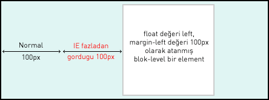

Bir blok-level elemente float değeri ve margin değeri atandığında IE'da sorun yaşarız. Örneğin float:left değeri atanmış bir içerik kutusuna soldan 100px kadar ayırmak istediğinde IE'de soldan 100px olması gereken mesafe 200px görünecektir.

.kapsul1 { float: left; width: 150px;
height: 150px; margin-left: 100px; } Bu hataya yanlızca float ve margin atamalarını beraber kullandığımız blok-level elementlerde karşılaşmaktayız. Bu element'ten sonraki elementlerde bu hata görülmeyecektir. Yani bu hataya sadece ilk float-margin uygulanan blok-level element maruz kalacaktır. Çözümü ise çok basit display:inline tanımlaması bizim sorunumuzu çözecektir. :::css .kapsul1 { float: left; width: 150px; height: 150px; margin-left: 100px; display: inline; } Bu makale hazırlanırken positioniseverything.net yararlanılmıştır. Daha ayrıntılı bilgiyi bu sitede bulabilirsiniz.(eng)
Yorumlar !